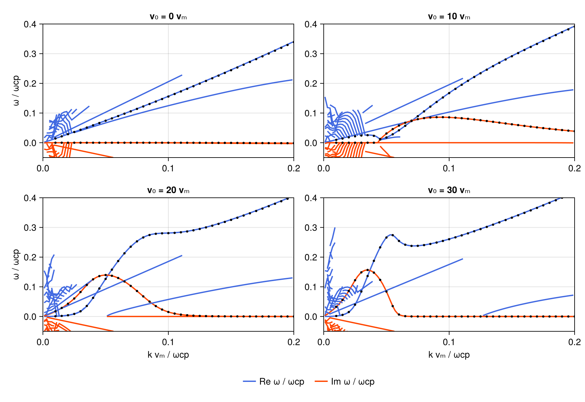

Ion beam instabilities (Gary et al. 1984)
The right-hand resonant electromagnetic ion beam instability of Gary, Smith, Lee, Goldstein & Forslund (1984), Fig. 1, after the PlasmaBO.jl case: a cool proton core (99%), a hot drifting proton beam (1%, T_b = 10 T_m) and neutralizing electrons at parallel propagation, β_m = 1, vA/c = 10⁻⁴. PlasmaBO tracks one branch per drift speed from a hand-picked seed (ionbeam_gary84_ref.tsv); here each panel is a seedless survey — the same ω box and k sweep at every drift, no per-case seeds.
The setup is fully dimensionless: ω in ωcp, k in ωcp/c, speeds in c. With β_m = 1 the core thermal speed √(2qT_m/m_p) equals vA, and (ωpp/ωcp)² = (c/vA)².
using VlasovMaxwellDispersion
using DelimitedFiles, Printf
using CairoMakie
vA_c = 1.0e-4 # vA/c
mratio = 1836.152673 # mp/me
Pi2 = 1 / vA_c^2 # (ωpp(ne)/ωcp)²
vthm = vA_c # core: √(2qT_m/mp)/c = vA/c at β_m = 1
vm = vthm / sqrt(2) # Gary's vm = √(qT_m/mp); k is scanned in ωcp/vm7.071067811865475e-5Current-free drifting pair: the core takes −(n_b/n_e)·v₀, the beam the rest.
function gary_plasma(v0_vm)
v0 = v0_vm * vm
v0m = -0.01 * v0
main = NormalizedSpecies(1.0, 0.99Pi2, Maxwellian(; vth_para = vthm, vd = v0m))
beam = NormalizedSpecies(1.0, 0.01Pi2, Maxwellian(; vth_para = sqrt(10) * vthm, vd = v0m + v0))
elec = NormalizedSpecies(-mratio, mratio * Pi2, Maxwellian(; vth_para = sqrt(mratio) * vthm))
return (main, beam, elec)
endgary_plasma (generic function with 1 method)Seedless surveys at four drift speeds
One ω box and k∥ sweep serves all four panels — the growing beam mode, the stable magnetosonic branch it detaches from, and the second weakly damped branch are found together.
region = (0.0 - 0.1im, 0.45 + 0.2im)
geom = CartesianSweep(kz = (0.001:0.002:0.2) ./ vm)
v0s = (0.0, 10.0, 20.0, 30.0)
sols = [solve(GlobalDispersionProblem(gary_plasma(v0), region, geom)) for v0 in v0s]4-element Vector{SurveySolution{DispersionBranch{Vector{ComplexF64}, Vector{Wavenumber{Float64}}, Vector{Float64}}, SolveStats{Float64}, GlobalDispersionProblem{Tuple{NormalizedSpecies{Float64, Separable{Gaussian{Float64, Nothing}, Gaussian{Float64, Float64}}}, NormalizedSpecies{Float64, Separable{Gaussian{Float64, Nothing}, Gaussian{Float64, Float64}}}, NormalizedSpecies{Float64, Separable{Gaussian{Float64, Nothing}, Gaussian{Float64, Float64}}}}, Tuple{ComplexF64, ComplexF64}, CartesianSweep{Bool, StepRangeLen{Float64, Base.TwicePrecision{Float64}, Base.TwicePrecision{Float64}, Int64}}, HarmonicSum}, AAA}}:
SurveySolution(retcode=:Success, 14 roots, 36955 evals, 0.277 s)
SurveySolution(retcode=:Success, 22 roots, 36268 evals, 0.417 s)
SurveySolution(retcode=:Success, 22 roots, 36396 evals, 0.194 s)
SurveySolution(retcode=:Success, 28 roots, 36256 evals, 0.203 s)Verification against PlasmaBO
For every reference point (191 per drift speed) the distance to the nearest surveyed root at matching k, plus the peak growth rates.
ref = readdlm(joinpath(@__DIR__, "ionbeam_gary84_ref.tsv"); comments = true)
for (v0, sol) in zip(v0s, sols)
rows = ref[isapprox.(ref[:, 1], v0), :]
ds = map(eachrow(rows)) do r
best = Inf
for b in sol.roots, (k, ω) in zip(b.k, b.omega)
abs(para(k) * vm - r[2]) < 0.002 || continue
best = min(best, abs(ω - complex(r[3], r[4])))
end
best
end
γ = maximum(maximum(imag, filter(isfinite, b.omega)) for b in sol.roots)
@printf(
"v0=%2.0f vm: median Δω=%.1e matched(<5e-3)=%3d/%d γmax=%.4f (ref %.4f)\n",
v0, sort(ds)[cld(end, 2)], count(<(5.0e-3), ds), length(ds), γ, maximum(rows[:, 4])
)
endv0= 0 vm: median Δω=NaN matched(<5e-3)= 0/191 γmax=0.0000 (ref 0.0000)
v0=10 vm: median Δω=NaN matched(<5e-3)= 0/191 γmax=0.0859 (ref 0.0861)
v0=20 vm: median Δω=NaN matched(<5e-3)= 0/191 γmax=0.1396 (ref 0.1397)
v0=30 vm: median Δω=NaN matched(<5e-3)= 0/191 γmax=0.1567 (ref 0.1568)Median deviations sit at ~10⁻³ ωcp (the reference's N = 3 harmonic truncation) and the peak growth rates match to 2×10⁻⁴ ωcp. The few unmatched points are reference samples where PlasmaBO's nearest-eigenvalue track hops branch near the marginal points.
Fig. 1 — growth and real frequency vs k
Solid: surveyed branches (blue Re ω, red Im ω). Black dots: PlasmaBO track. The v₀ = 0 panel shows the stable magnetosonic wave; with drift the beam-resonant mode detaches and grows.
fig = Figure(size = (900, 620))
for (i, (v0, sol)) in enumerate(zip(v0s, sols))
row, col = fldmod1(i, 2)
ax = Axis(
fig[row, col]; title = "v₀ = $(round(Int, v0)) vₘ",
xlabel = row == 2 ? "k vₘ / ωcp" : "", ylabel = col == 1 ? "ω / ωcp" : ""
)
for b in sol.roots
x = [para(k) * vm for k in b.k]
p = sortperm(x)
lines!(ax, x[p], real.(b.omega)[p]; color = :royalblue, linewidth = 2)
lines!(ax, x[p], imag.(b.omega)[p]; color = :orangered, linewidth = 2)
end
rows = ref[isapprox.(ref[:, 1], v0), :][1:5:end, :]
scatter!(ax, rows[:, 2], rows[:, 3]; color = :black, markersize = 5)
scatter!(ax, rows[:, 2], rows[:, 4]; color = :black, markersize = 5)
xlims!(ax, 0, 0.2)
ylims!(ax, -0.05, 0.4)
end
Legend(
fig[3, 1:2],
[LineElement(color = :royalblue, linewidth = 2), LineElement(color = :orangered, linewidth = 2)],
["Re ω / ωcp", "Im ω / ωcp"]; orientation = :horizontal, framevisible = false
)
fig
The short segments crowding the lower-left corner are real roots: a ladder of strongly damped (|γ| ~ ω) proton-cyclotron/Landau modes at small k. Branch linking fragments the fast-moving ladder.
This page was generated using Literate.jl.